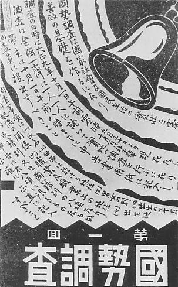
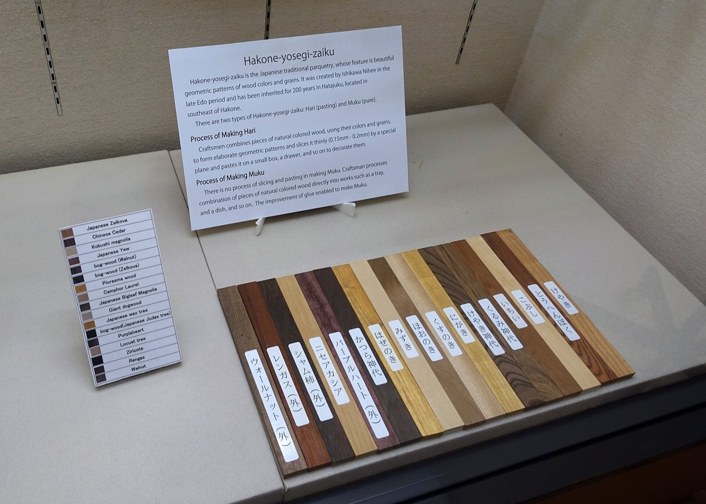
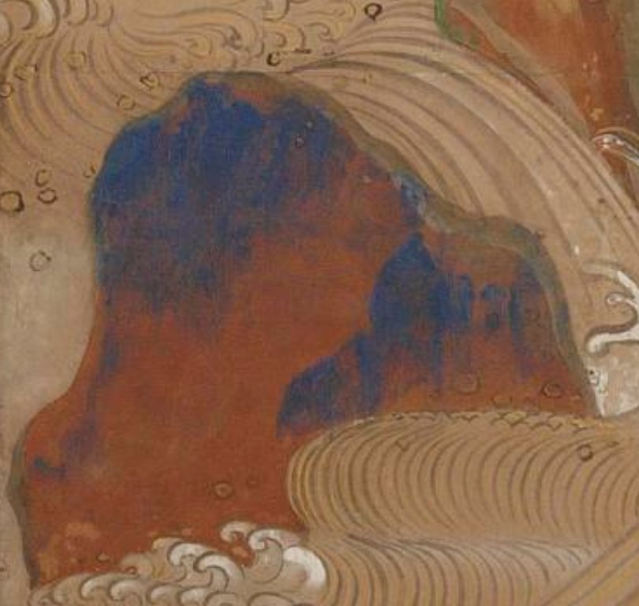
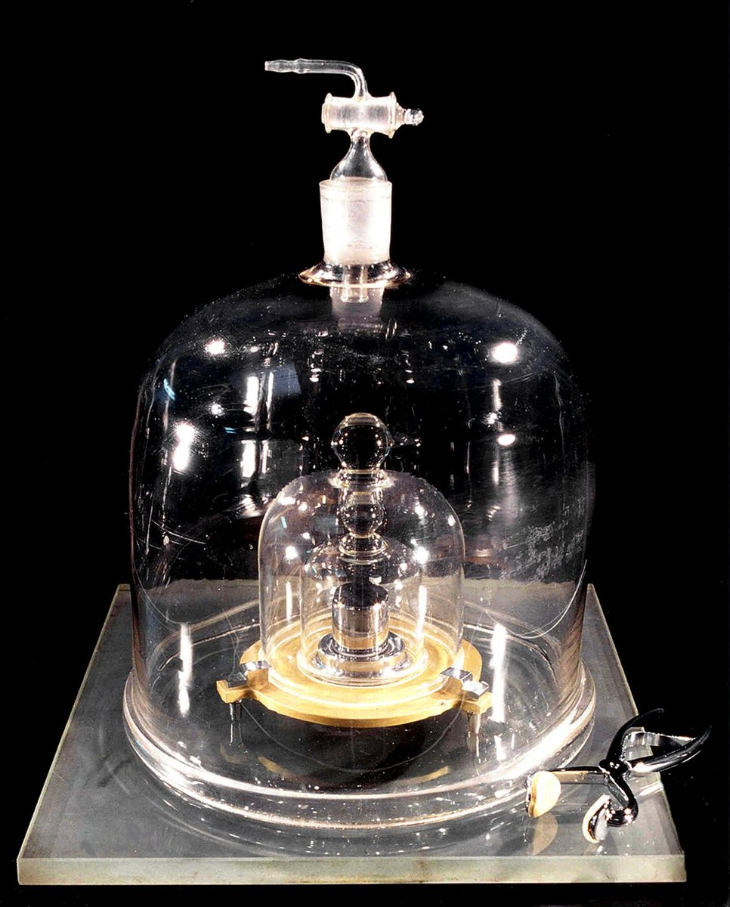
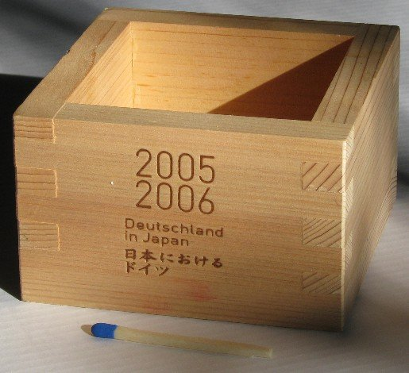

第46回
細長い机に並んだ酒の瓶と小さな杯を、人々が左右から取り囲んでいる。
Asacyan（2013年3月23日、京都市伏見区の利き酒会）／CC BY-SA 3.0／Wikimedia Commons（横長に切り出した）
手元の少数のデータから、見えない「本当の値」を言い当てる道具。標本平均 $\bar x$ が毎回ゆれること、そのゆれの大きさ（標準誤差 $s/\sqrt n$）、ゆれを見込んだ幅つきの答え（信頼区間）を順に導き、最後に工学実験の測定の不確かさ（タイプA・タイプB）へつなげる。
第1回から続く約束どおり、新しい記号は緑色の枠（記号）で「①読み方 ②日本語での意味 ③省略していない書き方 ④どこで出会うか」を書く。この回で特に注意するのは、$\bar x$（手元のデータの値）、$\bar X$（毎回変わる確率変数）、$\mu$（見えない本当の値）の3つを区別することである。区別をなくした書き方（省略）は、省略の段階で1段ずつ示す。
高校の数学Bで習った統計的な推測（標本平均の分布・信頼区間）も、仮定せずに一度は書く。覚えている部分は飛ばしてよい。導出は数値で一度手を動かしてから文字の式に進む。
前の回の期待値 $E[X]$・分散 $\operatorname{Var}(X)$・期待値の線形性は、そのまま道具として使う。正規分布・中心極限定理・誤差の伝播は第45回で説明されるので、この回ではその結果を使い、使う場所ごとにリンクを張る。
最初に、この回で新しく説明する記号と、前の回で説明済みの記号を分けて並べる。右の列の「→」で説明のある場所へ飛べる。
| 記号 | 読み方 | ざっくりした意味 | 説明 |
|---|---|---|---|
| $X_1,\dots,X_n$（i.i.d.） | エックス・ワンからエックス・エヌ、アイ・アイ・ディー | 同じ分布から互いに独立に取った $n$ 個の確率変数 | →1.2 |
| $\bar x$、$\bar X$（標本平均） | エックス・バー | $n$ 個を足して $n$ で割ったもの。$\bar X$ は毎回変わる確率変数、$\bar x$ は取れた値 | →2.1 |
| $\operatorname{SE}$（標準誤差） | エス・イー、ひょうじゅんごさ | $\bar X$ の標準偏差。$\sigma/\sqrt n$ | →2.5 |
| $s$、$s^2$（標本標準偏差・標本分散） | エス、エス・にじょう | データのずれの2乗を $n-1$ で割って平均し（根をとり）たもの | →3.2 |
| $\hat\theta$（推定量）、バイアス | シータ・ハット | パラメータ $\theta$ を当てにいく、データから作った量 | →4.1、→4.2 |
| $t_{\nu}$、$t^{*}$（t 分布、臨界値） | ティー分布、ティー・スター | $\sigma$ を $s$ に置き換えたときの標準化の分布／区間の幅を決める倍率 | →5.3 |
| 信頼区間、信頼水準 $95\%$ | しんらいくかん | 「$\bar x \pm t^*\,\mathrm{SE}$」の形の区間 | →5.4 |
| $u$、$u_{\mathrm A}$、$u_{\mathrm B}$、$u_{\mathrm c}$、$U$ | ユー、タイプA・B、ごうせい、かくちょう | 標準不確かさ／統計で見積もる／統計以外で見積もる／合成／拡張 | →6.1〜6.5 |
| 記号 | 意味 | 初出 |
|---|---|---|
| $:=$、$\approx$、$=$ | 左の名前を右の式で決める／ほぼ等しい／等しい | 第1回 2.2、2.4、2.1 |
| $\displaystyle\sum_{i=1}^{n}$（総和）、二重和 | $i=1$ から $n$ まで足す | 第4回、二重和 |
| $E[X]$、$\mu$（期待値・平均） | 確率で重みをつけた平均 | 第44回 3.2、$\mu$ |
| $\bar x$（データの平均） | データを足して個数で割ったもの | 第44回 3.2 |
| $\operatorname{Var}(X)$、$\sigma$（分散・標準偏差） | ずれの2乗の平均／その平方根 | 第44回 4.2、4.3 |
| 期待値の線形性 | $E[aX+b]=aE[X]+b$、$E[X+Y]=E[X]+E[Y]$ | 第44回 3.4 |
| $U(a,b)$（一様分布） | 区間に一様に広がる分布 | 第44回 5.5 |
| $\mathcal N(\mu,\sigma^2)$、$\sim$、中心極限定理、誤差の伝播 | 正規分布、従う、平均の分布が山形に近づく、入力の誤差が出力へ伝わる | 第45回（正規分布）、$\sim$、中心極限定理、誤差の伝播 |
| $\partial f/\partial x$（偏微分） | 他の変数を止めて $x$ だけで微分 | 第11回 |
| $\hat{\boldsymbol x}$（最小二乗解のハット） | データから求めた推定値の印 | 第47回 |
PHOTO 1｜現実

「國勢調査」の大きな字と、鐘の絵、細かい説明の文字が刷られたビラである。
大正期（1912〜1926年）の国勢調査のビラ、作者不詳（Commons の記載）／Public domain／Wikimedia Commons
MITATE 1｜見立て

色も木目も違う細長い木片が、名札をつけて一列に並んでいる。
Daderot（2016年9月3日、箱根関所資料館の箱根寄木細工の展示）／CC0／Wikimedia Commons（縮小した）
ノギスで金属棒の長さを5回測ったら、$12.34,\ 12.31,\ 12.36,\ 12.33,\ 12.32$ mm になった。毎回少し違う。ここで知りたいのは「この棒の本当の長さ」だが、それはどの測定値でもない。第44回では、「分布の平均 $\mu$ と散らばり $\sigma$ が分かっている」ところから出発して、データの振る舞いを論じた。この回は向きが逆である。
図1.1 を見る。
前の道具（期待値・分散）だけでできないこと：期待値 $E[X]=\mu$ は分布の理想的な平均であり、データから直接は計算できない。データから計算できるのは $\bar x$ のほうである。両者の関係（$\bar x$ は $\mu$ をどれだけ正しく伝えるか）を、この回で調べる。
①読み方：「エックス・ワン、…、エックス・エヌ」。「i.i.d.」は「アイ・アイ・ディー」。independent and identically distributed（独立で同じ分布）の頭文字。日本語では「独立同分布」。
②日本語での意味：同じ測定（同じ棒を同じ道具で測る）を $n$ 回行ったとき、$i$ 回目の測定値を表す確率変数が $X_i$。「同じ分布」とは、どの回も同じ平均 $\mu$ と同じ分散 $\sigma^2$ をもつこと。「独立」とは、ある回の結果が分かっても他の回の確率が変わらないこと（第44回 1.4）。
③省略していない書き方：確率変数の組 $X_1,X_2,\dots,X_n$ で、すべての $i$ について $E[X_i]=\mu$、$\operatorname{Var}(X_i)=\sigma^2$ であり、離散のときは任意の値 $a_1,\dots,a_n$ について $P(X_1=a_1\text{ かつ }\cdots\text{ かつ }X_n=a_n)=P(X_1=a_1)\cdots P(X_n=a_n)$ が成り立つ。ここでの添字 $i$ は「何回目の測定か」の番号である（第1回の添字）。
④どこで出会うか：実験の繰り返し測定、機械学習の訓練データ（「データは i.i.d. に取った」という仮定）。
「母集団」は、データを取り出す元の全体（ここでは、この棒を同じ道具で測ったときに起こりうる測定値の全体）。その分布の平均 $\mu$ と分散 $\sigma^2$ が、見えない母数（パラメータ）である。取り出した $n$ 個が標本。手元の数値 $x_1,\dots,x_n$ は、確率変数 $X_1,\dots,X_n$ の1回分の実現値である。
図1.2 を見る。
「$X_i$」と「$x_i$」を同じ物と思ってしまうこと。$X_i$ は「測る前の、まだ決まっていない値」（確率変数＝関数。第44回 2.1）、$x_i$ は「測った後の、決まった数」。標本を取り直せば $x_i$ は変わるが、$X_i$ の分布は変わらない。
PHOTO 2｜現実
シャンデリアの下の広間で、黒い服の人々が集まって立っている版画である。
William H. Prior の版画「Trial of the Pix」（Commons の記載は1873年、1887年の複製）／Public domain／Wikimedia Commons（縮小した）
MITATE 2｜見立て
苔むした石の坐像が、木立の斜面に数えきれないほど並んでいる。
STA3816（2013年6月17日、福岡県みやま市の清水寺の五百羅漢）／CC BY-SA 3.0／Wikimedia Commons（縮小した）
①読み方：「エックス・バー」（大文字・小文字とも）。「ひょうほんへいきん」。
②日本語での意味：$n$ 個の測定値を足して $n$ で割った値。大文字 $\bar X$ は「測る前」の確率変数、小文字 $\bar x$ は「測った後」の具体的な数値。
③省略していない書き方：
$$\bar X\;:=\;\frac1n\sum_{i=1}^{n}X_i\;=\;\frac{X_1+X_2+\cdots+X_n}{n},\qquad \bar x\;:=\;\frac1n\sum_{i=1}^{n}x_i.$$
これは第44回 3.2 のデータの平均と同じ式である。第47回の平均 $\bar x$も同じものを指す。
④どこで出会うか：実験データのまとめ、最小二乗法（第47回）、品質管理、機械学習。
| 段階 | 書き方 | 省いたもの | 省いても誤解が起きない理由／起きる場合 |
|---|---|---|---|
| S0 | $\bar X_n:=\dfrac1n\displaystyle\sum_{i=1}^{n}X_i$（確率変数）、$\bar x_n:=\dfrac1n\displaystyle\sum_{i=1}^{n}x_i$（数値） | （省略なし） | $n$ をつけて、何個の平均かを明示する |
| S1 | $\bar X$、$\bar x$ | 添字 $n$ | この回では $n$ は一定のまま使う。$n$ を動かして比べる図2.2・図2.3 では S0 に戻す |
| S2 | $\bar x$ だけ（大文字と小文字を区別しない） | 確率変数か数値かの区別 | 教科書によっては区別しない。平均の「ゆれ」を論じるときは $\bar X$（確率変数）が主語なので、混ぜると文が意味を失う（「$\bar x$ の分散」は、$\bar x$ が数値なら $0$ になってしまう） |
| S3 | $\langle x\rangle$、$\overline{x}$（物理・工学） | 記号の形 | 線の長さ（上の横線）が式のどこまでかを確かめる。$\overline{x^2}$ は「$x^2$ の平均」、$\bar x^{\,2}$ は「平均の2乗」で別物 |
S0 に戻したいときは、$\bar x$ の $n$ と、足している範囲（$i=1$ から $n$）を思い出せばよい。
最小の具体例：棒の長さの測定値 $12.34,\ 12.31,\ 12.36,\ 12.33,\ 12.32$（$n=5$）。
① 足す：$12.34+12.31+12.36+12.33+12.32=61.66$。
② $n=5$ で割る：$\bar x=\dfrac{61.66}{5}=12.332$ mm。
これが「本当の長さ」の推定値になる。しかし、もう一度5回測れば、別の $\bar x$ が出るだろう。次にこのゆれを調べる。
「ゆれ」を数で調べるため、まず手で全部数えられる小さな世界を作る。母集団は「$1,2,3$ の目が同じ確率 $\frac13$ で出るルーレット」とする。第44回の公式で、
$$\mu=\frac{1+2+3}{3}=2,\qquad \sigma^2=\frac{(1-2)^2+(2-2)^2+(3-2)^2}{3}=\frac23.$$
これを2回回して（$n=2$）、2つの数の平均 $\bar x$ を作る。回し方は $3\times3=9$ 通りで、どれも確率 $\frac19$（独立）。
| 1回目→2回目 | (1,1) | (1,2) | (1,3) | (2,1) | (2,2) | (2,3) | (3,1) | (3,2) | (3,3) |
|---|---|---|---|---|---|---|---|---|---|
| $\bar x$ | 1 | 1.5 | 2 | 1.5 | 2 | 2.5 | 2 | 2.5 | 3 |
図2.1 を見る。値ごとにまとめると、$\bar X=1,\ 1.5,\ 2,\ 2.5,\ 3$ の確率はそれぞれ $\frac19,\frac29,\frac39,\frac29,\frac19$。
① 期待値（第44回 3.2）：$E[\bar X]=1\cdot\frac19+1.5\cdot\frac29+2\cdot\frac39+2.5\cdot\frac29+3\cdot\frac19=\frac{1+3+6+5+3}{9}=\frac{18}9=2$。
② 分散（第44回 4.2の定義どおり）：$(1-2)^2\cdot\frac19+(1.5-2)^2\cdot\frac29+0+(2.5-2)^2\cdot\frac29+(3-2)^2\cdot\frac19=\frac{1+0.5+0.5+1}{9}=\frac39=\frac13$。
見るべき点が2つある。(i) $E[\bar X]=2=\mu$：平均の平均は、母平均に一致した。(ii) $\operatorname{Var}(\bar X)=\frac13=\frac{\sigma^2}{n}=\frac{2/3}{2}$：1個あたりの分散 $\frac23$ の、ちょうど $\frac1n$ になった。次の節で、これが偶然でなく一般に成り立つことを導く。
標本 $X_1,\dots,X_n$ が i.i.d.（平均 $\mu$、分散 $\sigma^2$）のとき、
① 定義を書く：$E[\bar X]=E\!\left[\dfrac1n\displaystyle\sum_{i=1}^nX_i\right]$。
② 定数倍 $\frac1n$ を外に出す：$=\dfrac1n\,E\!\left[\displaystyle\sum_{i=1}^nX_i\right]$。
③ 和の期待値を、期待値の和にする：$=\dfrac1n\displaystyle\sum_{i=1}^nE[X_i]$。
④ どの $i$ も $E[X_i]=\mu$：$=\dfrac1n\displaystyle\sum_{i=1}^n\mu$。
⑤ 同じ数 $\mu$ を $n$ 回足す：$=\dfrac1n\cdot n\mu=\mu$。
よって $E[\bar X]=\mu$。「標本平均は、平均すれば母平均に一致する」。この性質を不偏性という（4.2）。なお ③ では独立性を使っていない。同じ分布でさえあればよい。
分散（第44回 4.2）には、期待値のような「和を素通し」の性質がそのままでは成り立たない。成り立つのは独立のときだけである。まずそれを、離散の場合に導く。
$X,Y$ が独立なら、$\operatorname{Var}(X+Y)=\operatorname{Var}(X)+\operatorname{Var}(Y)$。
$\mu_X:=E[X]$、$\mu_Y:=E[Y]$ とおく。$E[X+Y]=\mu_X+\mu_Y$（線形性）なので、定義から
① $\operatorname{Var}(X+Y)=E\bigl[(X+Y-\mu_X-\mu_Y)^2\bigr]=E\bigl[\bigl((X-\mu_X)+(Y-\mu_Y)\bigr)^2\bigr]$。
② 2乗を展開：$=E\bigl[(X-\mu_X)^2\bigr]+E\bigl[(Y-\mu_Y)^2\bigr]+2E\bigl[(X-\mu_X)(Y-\mu_Y)\bigr]$。
③ 前の2項は定義どおり $\operatorname{Var}(X)$ と $\operatorname{Var}(Y)$。残るのは3項目。
④ 3項目を二重和で書く：$E[(X-\mu_X)(Y-\mu_Y)]=\displaystyle\sum_i\sum_j(x_i-\mu_X)(y_j-\mu_Y)\,p(x_i,y_j)$。
⑤ 独立なので $p(x_i,y_j)=p_X(x_i)\,p_Y(y_j)$：$=\displaystyle\sum_i\sum_j(x_i-\mu_X)p_X(x_i)\,(y_j-\mu_Y)p_Y(y_j)$。
⑥ $i$ に関係する因子と $j$ に関係する因子を分け、和を2つに割る：$=\Bigl(\displaystyle\sum_i(x_i-\mu_X)p_X(x_i)\Bigr)\Bigl(\displaystyle\sum_j(y_j-\mu_Y)p_Y(y_j)\Bigr)$。
⑦ 各カッコは $E[X-\mu_X]=\mu_X-\mu_X=0$、$E[Y-\mu_Y]=0$。積は $0$。
⑧ よって3項目は $0$ で、$\operatorname{Var}(X+Y)=\operatorname{Var}(X)+\operatorname{Var}(Y)$。 □
独立でないと ⑤ が使えず、3項目（共分散の2倍）が残る。たとえば $Y=X$ なら $\operatorname{Var}(2X)=4\operatorname{Var}(X)$ であって、$2\operatorname{Var}(X)$ ではない。
これを使って $\operatorname{Var}(\bar X)$ を求める。独立な $n$ 個についても、定理を2個ずつ繰り返し使えば $\operatorname{Var}(X_1+\cdots+X_n)=\operatorname{Var}(X_1)+\cdots+\operatorname{Var}(X_n)$ である。
① $\operatorname{Var}(\bar X)=\operatorname{Var}\!\left(\dfrac1n\displaystyle\sum_{i=1}^nX_i\right)$。
② 定数倍は2乗して外へ：$=\dfrac1{n^2}\operatorname{Var}\!\left(\displaystyle\sum_{i=1}^nX_i\right)$。
③ 独立なので分散を足す：$=\dfrac1{n^2}\displaystyle\sum_{i=1}^n\operatorname{Var}(X_i)$。
④ どの $i$ も $\operatorname{Var}(X_i)=\sigma^2$：$=\dfrac1{n^2}\cdot n\sigma^2$。
⑤ 約分：$=\dfrac{\sigma^2}{n}$。
よって $\operatorname{Var}(\bar X)=\dfrac{\sigma^2}{n}$。2.2 の例（$\frac{2/3}{2}=\frac13$）と一致する。
図2.2 を見る。
①読み方：「エス・イー」、または「ひょうじゅんごさ」。standard error の頭文字。
②日本語での意味：標本平均 $\bar X$ の標準偏差。標本を取り直したとき、$\bar x$ が母平均 $\mu$ のまわりに典型的にどれだけ散らばるか。
③省略していない書き方：
$$\operatorname{SE}(\bar X)\;:=\;\sqrt{\operatorname{Var}(\bar X)}\;=\;\frac{\sigma}{\sqrt n}.$$
最後の等号は 2.4 の結果と、平方根 $\sqrt{\sigma^2/n}=\sigma/\sqrt n$。標準偏差が「分散の平方根」だった（第44回 4.3）ことと同じ作りである。
④どこで出会うか：測定値のレポートの「±」、世論調査の誤差、機械学習の評価指標のばらつき。
最小の具体例：$\sigma=0.02$ mm の測定を $n=1,\ 4,\ 25$ 回行って平均をとる。$\operatorname{SE}=0.02,\ \dfrac{0.02}{2}=0.01,\ \dfrac{0.02}{5}=0.004$ mm。
図2.3 を見る。精度を2倍にするには、測定回数を2倍でなく4倍にする必要がある（$\sqrt4=2$）。10倍にするには100倍である。収穫逓減である。
図2.4 を見る。
「標準偏差 $\sigma$」と「標準誤差 $\operatorname{SE}$」を混ぜること。$\sigma$ は1回の測定値のばらつき（測定を増やしても変わらない）、$\operatorname{SE}$ は平均のばらつき（$n$ を増やすと $1/\sqrt n$ で小さくなる）。「測定値の幅」を言いたいときは $s$ や $\sigma$、「平均の確からしさ」を言いたいときは $\operatorname{SE}$。レポートでは、どちらの「±」なのかを必ず書く。
$\operatorname{SE}=\sigma/\sqrt n$ には、見えない $\sigma$ が入っている。そこで $\sigma$ もデータから推し量る必要がある。分散の定義は「$\mu$ からのずれの2乗の平均」だが、$\mu$ が見えないので、代わりに見える $\bar x$ からのずれを使う。
①読み方：「エス・にじょう」、「エス」。「ふへんぶんさん」（不偏分散）と呼ぶ本もある。
②日本語での意味：各データの標本平均 $\bar x$ からのずれを2乗し、$n$ ではなく$n-1$ で割って平均したもの。$s$ はその平方根で、データと同じ単位をもつ。
③省略していない書き方：
$$s^2\;:=\;\frac{1}{n-1}\sum_{i=1}^{n}\bigl(x_i-\bar x\bigr)^2,\qquad s\;:=\;\sqrt{s^2}.$$
確率変数として扱うときは $x_i,\bar x$ を $X_i,\bar X$ に置き換えて $S^2$（大文字）と書く本もある。この教材では、確率変数として扱う場面でも、文脈が決まるので $s^2$ と書き、必要なときだけ「確率変数としての $s^2$」と断る。
④どこで出会うか：測定のばらつきの表示、品質管理、回帰分析の残差のばらつき（第47回の残差）。
| 書き方 | 割る数 | 名前 | 注意 |
|---|---|---|---|
| $\dfrac1{n-1}\sum(x_i-\bar x)^2$ | $n-1$ | 標本分散、不偏分散 | この教材の $s^2$。電卓の「$\sigma_{n-1}$」「$s$」キー。Excel の STDEV.S |
| $\dfrac1{n}\sum(x_i-\bar x)^2$ | $n$ | データそのものの分散（第44回の定義で、確率を $\frac1n$ としたもの） | 電卓の「$\sigma_n$」キー。Excel の STDEV.P。$n$ が大きければ差は小さいが、$n=5$ では約 $12\%$ 違う |
本によって「標本分散」が $n$ 割りの意味のこともある。使う前に、割る数が $n$ か $n-1$ かを確かめる。
最小の具体例：データ $2,4,4,6$（$n=4$）。図3.1 を見る。
① 平均：$\bar x=\dfrac{2+4+4+6}{4}=4$。
② ずれ $x_i-\bar x$：$-2,\ 0,\ 0,\ 2$。
③ 2乗：$4,\ 0,\ 0,\ 4$。合計 $8$。図3.3 のように、ずれの2乗は「ずれを一辺とする正方形の面積」である。
④ $n-1=3$ で割る：$s^2=\dfrac83\approx2.667$、$s=\sqrt{8/3}\approx1.633$。
⑤ 標準誤差の推定値：$\dfrac{s}{\sqrt n}=\dfrac{1.633}{2}\approx0.8165$。
まず、ずれの2乗の和 $\displaystyle\sum_{i=1}^n(X_i-\bar X)^2$ を、期待値を取りやすい形に変える。
① $X_i-\bar X$ を $(X_i-\mu)-(\bar X-\mu)$ と書き直す。
② 2乗を展開：$\displaystyle\sum_{i=1}^n(X_i-\bar X)^2=\sum_{i=1}^n(X_i-\mu)^2-2(\bar X-\mu)\sum_{i=1}^n(X_i-\mu)+\sum_{i=1}^n(\bar X-\mu)^2$。
③ 真ん中の和：$\displaystyle\sum_{i=1}^n(X_i-\mu)=n\bar X-n\mu=n(\bar X-\mu)$。
④ 最後の和は同じ数を $n$ 回：$\displaystyle\sum_{i=1}^n(\bar X-\mu)^2=n(\bar X-\mu)^2$。
⑤ ②に③④を入れる：$=\displaystyle\sum_{i=1}^n(X_i-\mu)^2-2n(\bar X-\mu)^2+n(\bar X-\mu)^2=\sum_{i=1}^n(X_i-\mu)^2-n(\bar X-\mu)^2$。
⑥ 両辺の期待値をとる：$E\!\left[\displaystyle\sum_{i=1}^n(X_i-\bar X)^2\right]=\displaystyle\sum_{i=1}^nE\bigl[(X_i-\mu)^2\bigr]-n\,E\bigl[(\bar X-\mu)^2\bigr]$。
⑦ $E[(X_i-\mu)^2]=\operatorname{Var}(X_i)=\sigma^2$（定義）、$E[(\bar X-\mu)^2]=\operatorname{Var}(\bar X)=\dfrac{\sigma^2}{n}$（$E[\bar X]=\mu$ なので、これも分散の定義。2.3, 2.4）。
⑧ 代入：$=n\sigma^2-n\cdot\dfrac{\sigma^2}{n}=n\sigma^2-\sigma^2=(n-1)\sigma^2$。
よって $E\!\left[\displaystyle\sum(X_i-\bar X)^2\right]=(n-1)\sigma^2$。$n$ で割ると平均して $\frac{n-1}{n}\sigma^2$ になり、$\sigma^2$ より小さい。$n-1$ で割ってはじめて $E[s^2]=\sigma^2$ になる。
確かめ：2.2 の9通り（母集団 $\{1,2,3\}$、$n=2$）で $s^2=\dfrac{(x_1-\bar x)^2+(x_2-\bar x)^2}{2-1}=\dfrac{(x_1-x_2)^2}{2}$ を計算する。図3.2 を見る。9通りの値は $0,\,0.5,\,2,\,0.5,\,0,\,0.5,\,2,\,0.5,\,0$ で、合計 $6$、平均 $\dfrac69=\dfrac23=\sigma^2$。$n=2$ で割ると各値は半分になり、平均は $\dfrac13$ で、$\sigma^2=\dfrac23$ の半分に落ちる。
直感：ずれの和 $\sum(x_i-\bar x)=0$ なので、$n$ 個のずれのうち $n-1$ 個が決まれば残り1個も決まる。「自由に動けるずれ」は $n-1$ 個しかない（自由度 $n-1$）。また、$\bar x$ はデータ自身から作られているので、データに最も近い点であり（図3.1）、本当の $\mu$ からのずれよりも必ず小さく測ってしまう。この「小さく測る分」の補正が $n/(n-1)$ 倍である。
①読み方：「シータ・ハット」。$\theta$ はギリシャ文字の「シータ」。$\hat{\ }$ は「ハット」（帽子）。
②日本語での意味：知りたい母数 $\theta$（母平均 $\mu$、母分散 $\sigma^2$ など）を、データから作った式で当てにいく量。「$\theta$ の推定量」。ハットは「データから推し量ったもの」という印で、第47回の最小二乗解のハット $\hat{\boldsymbol x}$と同じ使い方である。
③省略していない書き方：$\hat\theta:=g(X_1,\dots,X_n)$（確率変数の関数＝まだ決まっていない値）。データが取れた後に数値を入れたもの $g(x_1,\dots,x_n)$ は「推定値」とよび、これも $\hat\theta$ と書くことがある。
④どこで出会うか：統計・機械学習の推定値、制御の状態推定、最小二乗法（第47回）。
図4.1 を見る。この回で出た2つの具体例は、
推定量はデータの関数なのでそれ自身が確率変数であり、標本を取り直すたびに値が変わる。だから、推定量の「よさ」を、期待値と分散で測れる。
①読み方：「バイアス」（偏り）、「ふへんせい」。
②日本語での意味：推定量の期待値が、知りたい母数からどれだけずれているかがバイアス。それが $0$ のとき不偏（偏りがない）。
③省略していない書き方：$\operatorname{Bias}(\hat\theta):=E[\hat\theta]-\theta$。$E[\hat\theta]=\theta$（すべての $\theta$ について）のとき、$\hat\theta$ は不偏推定量。
④どこで出会うか：統計の教科書、センサーの校正（系統誤差は「バイアス」）。
最小の具体例：2.3 から $E[\bar X]=\mu$（$\bar X$ は $\mu$ の不偏推定量）、3.3 から $E[s^2]=\sigma^2$（$s^2$ は $\sigma^2$ の不偏推定量）。$n$ で割る版 $\tilde s^2:=\frac1n\sum(X_i-\bar X)^2$ は、$E[\tilde s^2]=\dfrac{n-1}{n}\sigma^2$ なので、バイアスは $-\dfrac{\sigma^2}{n}$（小さすぎる）。
図4.2 を見る。
「不偏ならよい推定量」とは限らない。不偏は「平均的には外さない」ことで、1回ごとの当たり方（分散）は別である。$\bar X$ の分散は $\sigma^2/n$（$n$ が大きいほど小さい）。また、$s$ は $\sigma$ の不偏推定量ではない（$E[s]\lt\sigma$。$E[s^2]=\sigma^2$ だが平方根をとると偏る）。ただし $n$ が大きければ差はごく小さいので、実用上は $s$ をそのまま使う。
PHOTO 5｜現実
丸い眼鏡に口ひげの男が、上着とベストの姿でこちらを見ている。
William Sealy Gosset の肖像（Commons の記載は1908年撮影。Annals of Eugenics の追悼記事から取り込み）／Public domain／Wikimedia Commons（縮小した）
MITATE 5｜見立て

岩の形に、赤茶と青の顔料がにじんで溜まり、下に波の線が引かれている。
俵屋宗達『松島図屏風』のたらし込みの部分（Commons の記載は1629年）／Public domain／Wikimedia Commons
「長さは $12.332$ mm」とだけ書いても、それが $\pm0.001$ で正しいのか $\pm0.1$ で正しいのかが分からない。標準誤差が「ゆれの大きさ」を教えてくれるので、これを使って幅つきの答えを作る。
$\bar X$ を標準化（平均を引いて標準偏差で割る）した量を $Z:=\dfrac{\bar X-\mu}{\sigma/\sqrt n}$ とおく。第44回の線形変換の公式から、$E[Z]=0$、$\operatorname{Var}(Z)=1$ である。データが正規分布に従うなら、$Z$ は標準正規分布に従う。データが正規分布でなくても、$n$ がある程度大きければ中心極限定理（第45回）によって $Z$ はほぼ標準正規分布に従う。標準正規分布では、$-1.96$ から $1.96$ の間に入る確率が約 $95\%$ である（数値は正規分布表による。値は scipy で $1.95996\ldots$ と確認した）。図5.1 を見る。
$$P\!\left(-1.96\le\frac{\bar X-\mu}{\sigma/\sqrt n}\le1.96\right)\approx0.95.$$
この不等式を、$\mu$ について解く。1行に1操作ずつ進める。
① 各辺に $\sigma/\sqrt n$（正の数）を掛ける：$-1.96\dfrac{\sigma}{\sqrt n}\le\bar X-\mu\le1.96\dfrac{\sigma}{\sqrt n}$。
② 各辺に $-1$ を掛ける（向きが逆になる）：$1.96\dfrac{\sigma}{\sqrt n}\ge\mu-\bar X\ge-1.96\dfrac{\sigma}{\sqrt n}$。
③ 各辺に $\bar X$ を足す：$\bar X-1.96\dfrac{\sigma}{\sqrt n}\le\mu\le\bar X+1.96\dfrac{\sigma}{\sqrt n}$。
結論：「$\mu$ が、$\bar X\pm1.96\operatorname{SE}$ に入る」という事象が、約 $95\%$ の確率で起こる。ただし主語は$\bar X$ のほう（区間の端が確率変数）で、$\mu$ は動かない定数である。5.6 で誤解を扱う。
実際には $\sigma$ も見えない。$\sigma$ を $s$ に置き換えると、$T:=\dfrac{\bar X-\mu}{s/\sqrt n}$ は、$s$ 自身もゆれるぶん、正規分布よりも裾が重くなる。データが正規分布に従うとき、$T$ の分布を自由度 $n-1$ の $t$ 分布という。
①読み方：「ティー分布」、「ティー・ニュー」（$\nu$ はギリシャ文字「ニュー」）、「ティー・スター」。
②日本語での意味：$t_\nu$ は自由度 $\nu$ の $t$ 分布（左右対称・釣り鐘形で、正規分布より裾が重い）。$t^{*}$ は、$-t^*$ から $t^*$ の間に確率 $95\%$ が入るようにとった数（臨界値）。
③省略していない書き方：$t^{*}_{\nu}$ は、$T\sim t_\nu$（$\sim$：従う）のとき $P(-t^{*}_{\nu}\le T\le t^{*}_{\nu})=0.95$ となる数。自由度 $\nu=n-1$。数値は表またはソフトウェアで求める（この教材では scipy の値を使った）。
④どこで出会うか：少数データの区間推定、仮説検定（t 検定）。
$t$ 分布の密度の式の導出は、この教材の範囲を超える（結果の値だけを使う）。一方、$\nu$ が大きくなると正規分布に近づく、という性質は図5.2 で目に見える。図5.2 を見る。
| 自由度 $\nu$ | 1 | 2 | 3 | 4 | 5 | 9 | 14 | 19 | 29 | 59 | 99 | 正規 |
|---|---|---|---|---|---|---|---|---|---|---|---|---|
| $t^*_{\nu}$（95%） | 12.706 | 4.303 | 3.182 | 2.776 | 2.571 | 2.262 | 2.145 | 2.093 | 2.045 | 2.001 | 1.984 | 1.960 |
図5.3 を見る。$n$ が小さいときの $t^*$ は大きい（$n=2$ で $12.7$）：データが少ないぶん、幅を広げて「自信のなさ」を表す。
①読み方：「しんらいくかん」。「信頼水準 95%」は「ひゃくぶんのきゅうじゅうご」。
②日本語での意味：標本平均のまわりに、標準誤差の $t^*$ 倍の幅をとった区間。同じやり方で標本を何度も取り直して区間を作ると、そのうち約 $95\%$ の区間が $\mu$ を含む、という意味で「$95\%$ 信頼区間」とよぶ。
③省略していない書き方：
$$\Bigl[\ \bar x-t^{*}_{n-1}\cdot\frac{s}{\sqrt n}\ ,\ \ \bar x+t^{*}_{n-1}\cdot\frac{s}{\sqrt n}\ \Bigr]$$
（閉区間。$t^*$ は 5.3、$s$ は 3.2、$\operatorname{SE}$ の推定値は $s/\sqrt n$）。
④どこで出会うか：測定結果の報告、世論調査、A/B テスト、機械学習の評価。
| 段階 | 書き方 | 省いたもの | 省いても誤解が起きない理由／起きる場合 |
|---|---|---|---|
| S0 | $\Bigl[\bar x-t^{*}_{n-1}\dfrac{s}{\sqrt n},\ \bar x+t^{*}_{n-1}\dfrac{s}{\sqrt n}\Bigr]$ | （省略なし） | 区間の両端を書く |
| S1 | $\bar x\pm t^{*}_{n-1}\dfrac{s}{\sqrt n}$ | 角括弧と両端の2つの式 | 左右対称なので、中心と半幅だけで足りる。「$\pm$」は和と差の両方を表す |
| S2 | $\bar x\pm t^{*}\operatorname{SE}$ | $s/\sqrt n$ を $\operatorname{SE}$ に、$t^*$ の自由度 | 自由度は $n-1$ と決まっている。ただし $\operatorname{SE}$ が $s/\sqrt n$（推定値）なのか $\sigma/\sqrt n$（真の値）なのかは文脈で決まる |
| S3 | $\bar x\pm1.96\,\operatorname{SE}$、$\bar x\pm2\operatorname{SE}$ | $t^*$ を $1.96$ や $2$ に丸める | $n$ が大きいとき（目安 $n\ge30$ で $t^*\le2.05$）だけ。小さい $n$ で使うと区間が狭すぎる |
| S4 | $12.33\pm0.02$ mm | どの幅か（標準偏差か、標準誤差か、信頼区間か） | 誤解の元。必ず「$\pm$ は何か」を横に書く（6章） |
S0 に戻したいときは、$\operatorname{SE}$ を $s/\sqrt n$ に直し、$\pm$ を2つの端点に分け、$t^*$ を自由度 $n-1$ の表から読む。
図5.4 を見る。
最小の具体例①：2.1 の棒の測定値（$n=5$、$\bar x=12.332$ mm）。
① ずれ $x_i-\bar x$：$0.008,\ -0.022,\ 0.028,\ -0.002,\ -0.012$。
② 2乗して足す：$0.000064+0.000484+0.000784+0.000004+0.000144=0.00148$。
③ $n-1=4$ で割る：$s^2=0.00037$、$s=\sqrt{0.00037}\approx0.01924$ mm。
④ 標準誤差の推定値：$\dfrac{s}{\sqrt5}=\dfrac{0.01924}{2.236}\approx0.00860$ mm。
⑤ 自由度 $4$ の $t^*=2.776$（5.3 の表）。半幅：$2.776\times0.00860\approx0.0239$ mm。
⑥ $95\%$ 信頼区間：$12.332\pm0.024$、すなわち $[12.308,\ 12.356]$ mm。
最小の具体例②：3.2 のデータ $2,4,4,6$。$\bar x=4$、$\operatorname{SE}\approx0.8165$、自由度 $3$ の $t^*=3.182$。半幅は $3.182\times0.8165\approx2.598$。区間は $[1.40,\ 6.60]$。データが4個しかないので、幅は広い。
確かめ：$n$ を無限に大きくすると $t^*\to1.96$、$\operatorname{SE}\to0$。区間は $\mu$ に縮む。データを増やすと、幅は $1/\sqrt n$ で狭まる。
図5.5 を見る。同じ母集団から 40 回標本（$n=10$）を取り、毎回 $95\%$ 信頼区間を作った。
「この区間 $[12.308,\ 12.356]$ の中に、$\mu$ が $95\%$ の確率で入っている」は誤り。$\mu$ は動かない定数で、区間も一度計算したら動かない。「入っている」か「入っていない」かのどちらかで、確率は $0$ か $1$ である。$95\%$ は、区間の作り方が、取り直しのうち約 $95\%$ で当たる、という意味である。図5.5 では、40 本中 38 本が $\mu$ を含み、2 本が外れている。
「データの $95\%$ がこの区間に入る」も誤り。信頼区間は平均の居場所の幅であり、個々の測定値の幅ではない。個々の測定値は $s$ に応じて、もっと広く散らばる（図2.4）。
PHOTO 6｜現実

重ねたガラスの覆いの中に、小さな金属の塊が納められている。
BIPM（2019年9月3日、国際キログラム原器）／CC BY-SA 3.0 IGO／Wikimedia Commons（縮小した）
MITATE 6｜見立て

木を組んだ四角い升の側面に、「2005 2006」の文字が焼かれている。
Fraxinus2（2012年2月20日、1合の木の升）／CC BY-SA 3.0／Wikimedia Commons
工学実験のレポートでは「測定値 ± 不確かさ」を書く。ここで誤差（測定値 − 真値）と不確かさは別物である。誤差は真値が見えない以上、値を知りえない。不確かさは「測定値の確からしさを表す、疑いの幅」という、計算できる量である。国際的な指針（『計測における不確かさの表現のガイド』GUM、ISO/IEC Guide 98-3）では、不確かさを標準偏差の形で表すことを基本とする。ここでは、その考え方の骨組みを、この回までの道具で組み立てる。
①読み方：「ユー」。「ひょうじゅんふたしかさ」。uncertainty の頭文字。
②日本語での意味：測定結果の疑いの幅を、標準偏差と同じ尺度で表した数。単位は測定値と同じ。
③省略していない書き方：$u(x)$（量 $x$ の標準不確かさ）。文脈が決まるとき $u$ と略す。
④どこで出会うか：測定のレポート、校正証明書、品質保証。
図6.1 を見る。不確かさは、見積もり方で2種類に分ける（良し悪しの区別ではない）。
①読み方：「ユー・エー」。
②日本語での意味：同じ量を繰り返し測ったデータの統計から見積もる標準不確かさ。
③省略していない書き方：$u_{\mathrm A}:=\dfrac{s}{\sqrt n}$。つまり標準誤差の推定値そのもの。
④どこで出会うか：繰り返し測定のあるすべての実験。
最小の具体例：2.1 の棒の測定（$n=5$、$s=0.01924$ mm）。$u_{\mathrm A}=0.01924/\sqrt5\approx0.00860$ mm（5.4 ④と同じ）。
①読み方：「ユー・ビー」。
②日本語での意味：繰り返しのデータ以外の情報（器具の分解能、校正証明書、メーカー仕様、過去の経験）から見積もる標準不確かさ。
③省略していない書き方：真値が幅 $\pm a$ の範囲に一様に散らばる（一様分布 $U(-a,a)$）と仮定すると、
$$u_{\mathrm B}\;:=\;\frac{a}{\sqrt3}.$$
④どこで出会うか：デジタル表示の分解能、ノギス・電圧計の仕様誤差、校正証明書の「±」。
導出：第44回 5.5 で、$U(\alpha,\beta)$ の標準偏差は $\sigma=\dfrac{\beta-\alpha}{\sqrt{12}}$ だった。図6.2 を見る。
① $\alpha=-a,\ \beta=a$ を代入：$\sigma=\dfrac{a-(-a)}{\sqrt{12}}=\dfrac{2a}{\sqrt{12}}$。
② $\sqrt{12}=2\sqrt3$ を使う：$\sigma=\dfrac{2a}{2\sqrt3}=\dfrac{a}{\sqrt3}$。
最小の具体例：ノギスの表示が $0.01$ mm きざみ。表示の丸めにより、真の値は表示から $\pm0.005$ mm の範囲に入る。$a=0.005$ mm、$u_{\mathrm B}=\dfrac{0.005}{\sqrt3}\approx0.00289$ mm。
「一様分布」の仮定は、分布が分からないときの見積もりの約束であり、真に一様だという主張ではない。校正証明書に「拡張不確かさ $U$（$k=2$）」と書いてあれば、$u_{\mathrm B}=U/2$ を使う（6.5）。仕様書の書き方によって、割る数が変わる。細部は GUM の本文で確認すること（この教材では未照合）。
①読み方：「ユー・シー」。
②日本語での意味：複数の不確かさの原因（タイプAとB）をまとめた、全体の標準不確かさ。
③省略していない書き方：独立な原因 $u_1,u_2,\dots$ を、2乗して足して平方根：
$$u_{\mathrm c}\;:=\;\sqrt{u_1^{\,2}+u_2^{\,2}+\cdots}.$$
④どこで出会うか：不確かさの見積もり表（バジェット表）。
なぜ2乗して足すのか：2.4 で導いた定理「独立なら分散は足し算」を、標準偏差 $u$ に直した形である。$u_{\mathrm c}^2=\operatorname{Var}(\text{原因1}+\text{原因2})=u_1^2+u_2^2$。標準偏差を直接足す（$u_1+u_2$）のは、独立な原因が同時に同じ向きに最大にずれることはまれなので、過大である。図6.3 を見る。
最小の具体例：棒の長さ（$u_{\mathrm A}=0.00860$、$u_{\mathrm B}=0.00289$）。
① 2乗：$u_{\mathrm A}^2=7.40\times10^{-5}$、$u_{\mathrm B}^2=8.33\times10^{-6}$。
② 足す：$8.23\times10^{-5}$。
③ 平方根：$u_{\mathrm c}=\sqrt{8.23\times10^{-5}}\approx0.00907$ mm。
支配的なのは $u_{\mathrm A}$ で、$u_{\mathrm B}$ は小さく効く。直接足した $0.01149$ より小さい。
入力が測定量ではなく計算量のとき：求めたい量が $y=f(x_1,x_2,\dots)$ で、入力 $x_i$ が独立に不確かさ $u_i$ をもつとき、第45回の誤差の伝播の結果は、偏微分を使って
$$u_{\mathrm c}(y)\;=\;\sqrt{\left(\frac{\partial f}{\partial x_1}\right)^{2}u_1^{\,2}+\left(\frac{\partial f}{\partial x_2}\right)^{2}u_2^{\,2}+\cdots}.$$
各入力の不確かさに、感度 $\partial f/\partial x_i$ を掛けて2乗して足す、という形である。ここでは2つの特別な場合で確かめる（一般形の導出は第45回）。
(i) $f=x_1+x_2$：$\partial f/\partial x_1=\partial f/\partial x_2=1$ なので $u_{\mathrm c}=\sqrt{u_1^2+u_2^2}$。2.4 の定理と一致する。
(ii) $f=a\,x_1$（$a$ は定数）：$\partial f/\partial x_1=a$ なので $u_{\mathrm c}=|a|u_1$。第44回 4.5 の $\operatorname{Var}(aX)=a^2\operatorname{Var}(X)$ の平方根と一致する。
最小の具体例：長方形の面積 $S=ab$。$a=20.00$ mm（$u=0.02$）、$b=10.00$ mm（$u=0.01$）。図6.5 を見る。
① 感度：$\dfrac{\partial S}{\partial a}=b=10.00$、$\dfrac{\partial S}{\partial b}=a=20.00$。
② 各項：$(10\times0.02)^2=0.04$、$(20\times0.01)^2=0.04$。
③ 足して平方根：$u_{\mathrm c}(S)=\sqrt{0.08}\approx0.283$ mm²。面積は $S=200.00$ mm²。
①読み方：「ユー（大文字）」、「ケー」（包含係数）。
②日本語での意味：合成標準不確かさ $u_{\mathrm c}$ を $k$ 倍して、区間の幅を広げたもの。$k=2$ を使うと、正規分布に近いとき約 $95\%$ の区間になる（5.2 の $1.96\approx2$）。
③省略していない書き方：$U:=k\,u_{\mathrm c}$。結果は「$y\pm U$（$k=2$）」と、$k$ を添えて書く。
④どこで出会うか：校正証明書、試験成績書、レポートの結果欄。
最小の具体例：棒の長さ。$U=2\times0.00907=0.0181$ mm。
① 結果を $U$ の桁に合わせる：$U\approx0.02$ mm（不確かさは有効数字1〜2桁）。
② 測定値を同じ桁まで書く：$12.332\to12.33$ mm。
③ 報告：「長さ $12.33\pm0.02$ mm（$k=2$。繰り返し5回の統計と、分解能 $0.01$ mm から合成）」。図6.4 を見る。
確かめ：5.4 の信頼区間 $12.332\pm0.024$（タイプAだけ、$t^*=2.776$）とほぼ同じ幅になった。$k=2$ は $t^*$ の代わりの丸めであり、$n=5$ ではやや狭めに出る。小標本では $t^*$ を使うほうが安全である（GUM は有効自由度に応じて $k$ を選ぶ。細部は未照合）。
ある抵抗の測定値（Ω）が $100.2,\ 99.8,\ 100.1,\ 100.0,\ 99.9$ だった。$\bar x$、$s$、$\operatorname{SE}$ を求めよ。
解答
① 平均：$100.2+99.8+100.1+100.0+99.9=500.0$、$\bar x=500.0/5=100.0$ Ω。
② ずれ：$0.2,\ -0.2,\ 0.1,\ 0,\ -0.1$。
③ 2乗の和：$0.04+0.04+0.01+0+0.01=0.10$。
④ $s^2=0.10/(5-1)=0.025$、$s=\sqrt{0.025}\approx0.1581$ Ω。
⑤ $\operatorname{SE}=s/\sqrt5\approx0.0707$ Ω。
例題1のデータで、$95\%$ 信頼区間を求めよ。また $n$ を 20 に増やして $s$ が同じだったとき、半幅はどう変わるか。
解答
① $n=5$、自由度 $4$ の $t^*=2.776$。半幅 $=2.776\times0.0707\approx0.1963$。
② 区間：$100.0\pm0.196$、すなわち $[99.80,\ 100.20]$ Ω。
③ $n=20$：自由度 $19$ の $t^*=2.093$、$\operatorname{SE}=0.1581/\sqrt{20}\approx0.03535$。半幅 $\approx0.0740$。
④ 比：$0.1963\to0.0740$ で、約 $0.38$ 倍。内訳は $t^*$ が $2.776\to2.093$（$0.754$ 倍）、$\sqrt n$ が $\sqrt5\to\sqrt{20}$（$\operatorname{SE}$ が $0.5$ 倍）。$0.754\times0.5=0.377$ ✓。
$\sigma=0.02$ mm の測定で、平均の標準誤差を $0.005$ mm 以下にしたい。何回測ればよいか。
解答
① $\dfrac{\sigma}{\sqrt n}\le0.005$。
② 両辺に $\sqrt n$ を掛け、両辺を $0.005$ で割る：$\sqrt n\ge\dfrac{0.02}{0.005}=4$。
③ 2乗：$n\ge16$。
④ 確かめ：$n=16$ で $0.02/\sqrt{16}=0.005$ ✓。1回の測定（$0.02$）の $4$ 倍の精度に $16$ 回かかる。
電圧計（分解能 $0.01$ V）で電圧を 4 回測り、$5.02,\ 5.03,\ 5.01,\ 5.02$ V を得た。タイプA、タイプB、合成標準不確かさ、$k=2$ の拡張不確かさを求め、結果を書け。
解答
① 平均：$\bar x=\dfrac{5.02+5.03+5.01+5.02}{4}=5.02$ V。
② ずれ：$0,\ 0.01,\ -0.01,\ 0$。2乗の和：$0.0002$。$s^2=0.0002/3$、$s\approx0.00816$ V。
③ $u_{\mathrm A}=s/\sqrt4\approx0.00408$ V。
④ 分解能 $0.01$ V から $a=0.005$ V、$u_{\mathrm B}=0.005/\sqrt3\approx0.00289$ V。
⑤ 合成：$u_{\mathrm c}=\sqrt{0.00408^2+0.00289^2}=\sqrt{1.667\times10^{-5}+8.33\times10^{-6}}=\sqrt{2.5\times10^{-5}}=0.005$ V。
⑥ $U=2\times0.005=0.01$ V。報告：「$5.02\pm0.01$ V（$k=2$）」。
解答は、見たいときだけ開く。A は記号を読み書きする問題、B は標準的な問題、C は発展。
$3+5+7+9+11=35$、$\bar x=35/5=7$。
$\bar x=3$、ずれ $-2,0,2$、2乗の和 $8$。$s^2=8/2=4$、$s=2$。$n$ で割ると $8/3\approx2.667$。$n-1$ のほうが $1.5$ 倍大きい（$n/(n-1)=3/2$）。
$n=9$：$3/3=1$。$n=36$：$3/6=0.5$。$n$ が $4$ 倍で $\operatorname{SE}$ は半分。
(1) 標本平均は、何度も取り直した平均で母平均に一致する（不偏）。(2) 標本平均のゆれの2乗（分散）は、1回の測定の分散の $1/n$。(3) $n-1$ で割った標本分散は、何度も取り直した平均で母分散に一致する。
(1) $\mu=1$、$\sigma^2=\frac{(0-1)^2+(2-1)^2}{2}=1$。(2) $(0,0)$：$\bar x=0$、$s^2=0$。$(0,2)$：$\bar x=1$、$s^2=\frac{(0-2)^2}{2}=2$。$(2,0)$：同じく $1$、$2$。$(2,2)$：$2$、$0$。(3) $E[\bar X]=\frac{0+1+1+2}{4}=1=\mu$。$\operatorname{Var}(\bar X)=\frac{1+0+0+1}{4}=\frac12=\frac{\sigma^2}{2}$。$E[s^2]=\frac{0+2+2+0}{4}=1=\sigma^2$。すべて一致。
$\bar x=40.2/4=10.05$。ずれ $-0.25,\ 0.05,\ -0.05,\ 0.25$、2乗の和 $0.0625+0.0025+0.0025+0.0625=0.13$。$s^2=0.13/3\approx0.04333$、$s\approx0.2082$。$\operatorname{SE}=0.2082/2\approx0.1041$。半幅 $3.182\times0.1041\approx0.331$。区間 $[9.72,\ 10.38]$。
(1) $4+9=13$、標準偏差 $\sqrt{13}\approx3.606$。(2) $X-Y=X+(-1)Y$、$\operatorname{Var}(-Y)=(-1)^2\cdot9=9$ なので、$4+9=13$。差でも分散は足す。(3) $\sqrt{4+9}=3.606$、直接足すと $5$。合成のほうが小さい。
丸めにより真の値は表示の $\pm0.05$ ℃ に入る。$a=0.05$、$u_{\mathrm B}=0.05/\sqrt3\approx0.0289$ ℃。
$\dfrac{dS}{dd}=\dfrac{\pi}{2}d=\dfrac{\pi}{2}\times12=6\pi\approx18.85$ mm。$u_{\mathrm c}(S)=18.85\times0.04\approx0.754$ mm²。$S=\frac{\pi}{4}\times144=36\pi\approx113.1$ mm²。相対では約 $0.67\%$ で、直径の相対不確かさ $0.04/12\approx0.33\%$ のちょうど2倍（2乗の指数）。
半幅 $\propto1/\sqrt n$ なので $16$ 倍。$n=5\to80$（16倍）では、$\operatorname{SE}$ は $1/4$、$t^*$ は $1.990/2.776=0.717$ 倍。合わせて $0.179$ 倍（約 $1/5.6$）で、$1/4$ より少し縮む。
(1) 区間は計算後は固定、$\mu$ も定数なので、含むか含まないかのどちらか。$95\%$ は作り方の当たる割合。(2) 区間は平均の居場所の幅であり、個々の値の幅ではない。個々の値は $s$（$\operatorname{SE}$ の $\sqrt n$ 倍）で散らばる。


_-_Hakone,_Japan_-_DSC06050.jpg){kind=link}
_1.355_-_Trial_of_the_Pix.jpg){kind=link}